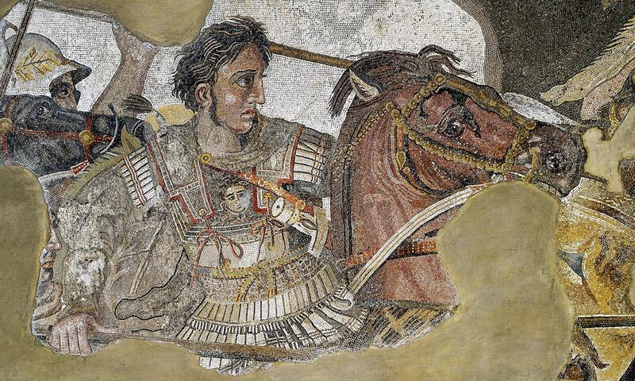
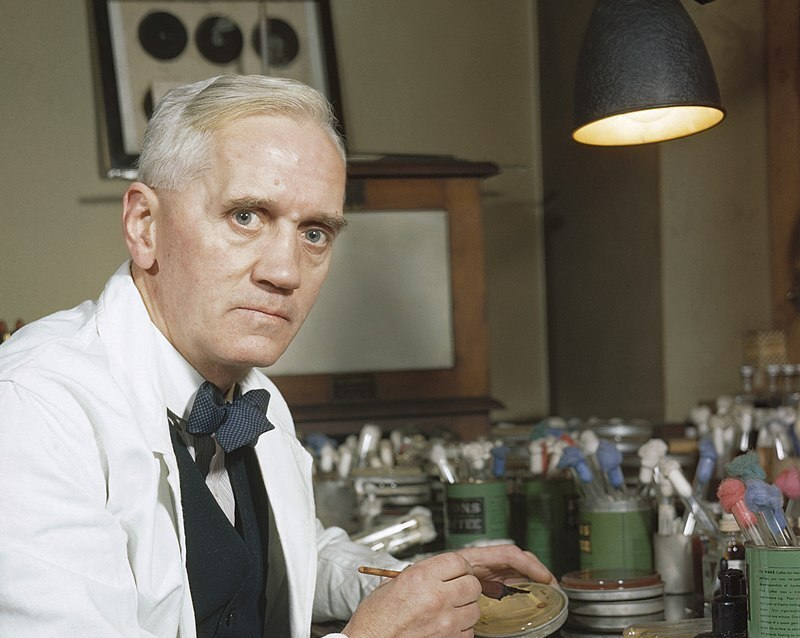

Der Name „Alexander" ist bei uns Programm. Nicht als Heldenverehrung, sondern als methodische Haltung: Wir suchen in historischen Lebensläufen nach Mustern von Resilienz, Reflexion und Verantwortung – und fragen, was sie für unsere Gegenwart bedeuten.
Die hier versammelten Persönlichkeiten – Männer und Frauen mit „Alexander"-Bezug – zeigen unterschiedliche Facetten dessen, was Widerstandskraft ausmacht: systemisches Denken (Humboldt), Fehlerkultur (Fleming), moralische Standhaftigkeit (Solschenizyn), Bildung als Stabilisator (Hypatia), Erkundungsmut (David-Néel), institutionelle Reformen (Kollontai) und strategische Anpassungsfähigkeit (Alexander der Große).
Wir verschweigen ihre Schattenseiten nicht. Gerade in den Ambivalenzen liegt die Lehre: Resilienz ohne Ethik wird destruktiv. Macht ohne Reflexion schadet. Fortschritt ohne Gerechtigkeit ist brüchig. Die folgenden Porträts sind keine Heiligenlegenden, sondern kritische Würdigungen – mit Blick auf das, was wir heute brauchen.
Navigationstipp
Jedes Porträt folgt derselben Struktur: Biografie & Kontext → Resilienz-Perspektive → Kritische Reflexion → Praktische Übertragung. Nutzen Sie das Inhaltsverzeichnis, um direkt zu einer Person zu springen.

Alexander der Große
Strategie & Anpassungsfähigkeit
356–323 v. Chr. · Makedonischer König und Feldherr
Biografie & historischer Kontext
Alexander III. von Makedonien, Schüler des Aristoteles, übernahm mit 20 Jahren die Herrschaft und eroberte binnen zehn Jahren ein Reich von Griechenland bis zum Indus. Seine Feldzüge veränderten die antike Welt grundlegend: Sie schufen eine Vernetzung von Kulturen (Hellenismus), förderten Handel und Wissenstransfer, erforderten aber auch enorme militärische Gewalt und forderten Hunderttausende Opfer.
Alexander war kein bloßer Eroberer. Er gründete Städte, integrierte persische Eliten in seine Verwaltung, heiratete baktrische Prinzessinnen und förderte kulturelle Synthesen. Sein Ansatz war pragmatisch-strategisch: Wo Gewalt nicht half, setzte er auf Diplomatie und symbolische Integration. Doch sein Herrschaftsstil war auch autokratisch, seine Entscheidungen manchmal impulsiv, und der Preis seiner Vision war hoch.
Resilienz-Perspektive: Was wir lernen können
Entscheiden unter Unsicherheit: Alexander bewegte sich ständig in unbekanntem Terrain – geografisch, politisch, kulturell. Seine Fähigkeit, schnell zu entscheiden und Pläne anzupassen, war Überlebensbedingung. Lehre: In komplexen Lagen ist Entscheidungstempo oft wichtiger als perfekte Information.
Kulturelle Übersetzungsarbeit: Statt eroberte Gebiete nur zu unterwerfen, versuchte Alexander, persische und griechische Elemente zu verbinden. Das stabilisierte sein Reich kurzfristig. Heute: Diverse Teams und interkulturelle Kompetenz erhöhen Systemresilienz.
Logistik als Fundament: Seine Feldzüge funktionierten nur, weil Versorgungslinien gesichert waren. Übertragen: Resilienz braucht funktionierende Infrastrukturen – materiell wie sozial.
Symbolische Kommunikation: Alexander inszenierte sich bewusst – als Nachfolger der Pharaonen, als Beschützer griechischer Kultur. Narrative sind Machtinstrumente. Lehre: Wer Resilienz fördern will, muss Geschichten erzählen, die Sinn stiften.
Alexanders Eroberungen waren gewaltsam. Städte wie Tyros und Theben wurden zerstört, Bevölkerungen versklavt. Sein Führungsstil wurde zunehmend despotisch – er ließ Kritiker hinrichten, darunter enge Vertraute. Sein früher Tod mit 32 hinterließ ein Reich ohne stabile Nachfolgeregelung, das rasch zerfiel.
Die zentrale Lehre: Führungsstärke ohne ethische Reflexion und institutionelle Absicherung führt zu Schäden, die Generationen überdauern. Resilienz kann nicht auf einer einzelnen Person ruhen – sie braucht Strukturen, Checks and Balances, geteilte Verantwortung. Alexanders Erfolg war brilliant, aber nicht nachhaltig.
Praktische Übertragung auf heute
In Krisenlagen – ob Pandemie, Klimawandel oder geopolitische Konflikte – brauchen wir adaptive Führung: schnelle Entscheidungen, kulturelle Sensibilität, klare Kommunikation. Aber ebenso wichtig: demokratische Kontrolle, Transparenz, Fehlerkultur. Alexanders Geschichte warnt davor, charismatische Einzelpersonen zu überhöhen. Resiliente Systeme bauen auf kollektiver Intelligenz, nicht auf Heldenfiguren.
Hypatia von Alexandria
Bildung als Leuchtturm
ca. 355–415 n. Chr. · Philosophin, Mathematikerin, Astronomin
Biografie & historischer Kontext
Hypatia lehrte in Alexandria, dem intellektuellen Zentrum der Spätantike. Sie kommentierte die Werke von Ptolemäus und Diophant, leitete eine Philosophenschule und war Beraterin hochrangiger Beamter. In einer Zeit religiöser Umbrüche – das Christentum verdrängte zunehmend die alten Kulte – verkörperte sie rationalen Diskurs und wissenschaftliche Unabhängigkeit.
Ihr gewaltsamer Tod 415 n. Chr., verübt von einem christlichen Mob, gilt als Symbol für den Niedergang der antiken Gelehrsamkeit. Hypatias Ermordung zeigt: Wissensräume sind fragil und müssen aktiv geschützt werden. Ihre Schüler*innen überlieferten ihr Andenken – und die Erinnerung an eine Zeit, in der Bildung Religionen, Ethnien und Geschlechter verband.
Resilienz-Perspektive: Was wir lernen können
Bildung als kulturelles Immunsystem: Hypatias Schule war ein Ort kritischen Denkens. Solche Räume schaffen gesellschaftliche Resilienz, weil sie Menschen befähigen, Propaganda zu durchschauen, Argumente zu prüfen, Unsicherheit auszuhalten.
Dialogräume erhalten: In polarisierten Zeiten braucht es Orte, an denen unterschiedliche Perspektiven zusammenkommen. Hypatias Schule war religiös und ethnisch divers – ein Modell für pluralistische Diskurskultur.
Interdisziplinarität: Sie verband Mathematik, Astronomie, Philosophie. Resilienz entsteht oft an Schnittstellen: Wer verschiedene Denkweisen kennt, ist anpassungsfähiger.
Vorbildfunktion: Hypatia war eine der wenigen öffentlich sichtbaren Gelehrten ihrer Zeit – und eine Frau. Ihre Existenz allein erweiterte Möglichkeitsräume. Heute: Repräsentation schafft Selbstwirksamkeit.
Kritische Reflexion: Grenzen & Tragik
Hypatias Geschichte endet mit ihrer Ermordung – ein brutales Scheitern des Ideals, dass Vernunft Fanatismus besiegt. Sie zeigt: Bildung allein schützt nicht, wenn gesellschaftliche Spannungen eskalieren. Resilienz braucht nicht nur individuelle Aufklärung, sondern auch institutionelle Sicherungen: Rechtsstaatlichkeit, Minderheitenschutz, eine Öffentlichkeit, die Gewalt ächtet.
Zugleich: Hypatias Vermächtnis überlebte. Ihr Schicksal wurde zur Mahnung – und ihre Methode, kritisches Denken zu fördern, bleibt aktuell. Die Tragik liegt darin, dass sie selbst nicht geschützt werden konnte. Die Lehre: Wir müssen Wissensräume aktiv verteidigen, nicht nur inhaltlich, sondern politisch.
Praktische Übertragung auf heute
Bildungseinrichtungen, Bibliotheken, unabhängige Medien sind moderne Entsprechungen von Hypatias Schule. Sie zu finanzieren, zu schützen und zugänglich zu machen, ist Resilienz-Investment. In Zeiten von Desinformation und Polarisierung braucht es zudem digitale Medienkompetenz – die Fähigkeit, Quellen zu prüfen, Argumente zu bewerten, mit Ambiguität umzugehen. Hypatias Erbe: Kritisches Denken ist keine Luxus-Option, sondern Überlebensstrategie.
Alexandra David-Néel war Opernsängerin, Anarchistin, Buddhistin und Forschungsreisende. 1924 erreichte sie als erste westliche Frau Lhasa, die verbotene Hauptstadt Tibets – verkleidet als Bettlerin, nach monatelangem Fußmarsch durch den Himalaya. Ihre Reisen waren nicht touristisch, sondern existenziell: Sie suchte spirituelle Erkenntnis und testete ihre Grenzen.
David-Néel lebte jahrelang in Klöstern, lernte Tibetisch, studierte buddhistische Philosophie und schrieb über 30 Bücher. Sie war keine neutrale Beobachterin, sondern engagierte Teilnehmerin – und zugleich kritische Analytikerin. Ihre Texte verbanden Abenteuerlust mit intellektueller Tiefe. Sie starb mit 100 Jahren, nachdem sie ein Leben zwischen Kulturen, Kontinenten und Weltanschauungen geführt hatte.
Resilienz-Perspektive: Was wir lernen können
Grenzen überschreiten als Training: Neue Umgebungen fordern Anpassungsfähigkeit. David-Néel entwickelte durch ihre Reisen enorme psychische Widerstandskraft – Kälte, Hunger, Unsicherheit wurden zur Normalität. Übertragen: Kontrolliertes Verlassen der Komfortzone stärkt Resilienz.
Innere Ordnung in Chaos: Sie praktizierte täglich Meditation, führte Tagebücher, pflegte Rituale. Diese Selbstführung war Ankerpunkt in chaotischen Umgebungen. Lehre: Routinen schaffen Stabilität, wenn äußere Strukturen fehlen.
Kulturelle Sensibilität: Statt Tibet zu exotisieren, lernte sie Sprache, Sitten, Philosophie. Respekt vor dem Fremden war nicht nur ethisch geboten, sondern strategisch klug – er ermöglichte Zugang und Schutz.
Langfristperspektive: Ihre Reisen erforderten Jahre der Vorbereitung und Ausdauer. Resilienz ist oft ein Marathon, kein Sprint. David-Néel zeigt: Geduld und Zielstrebigkeit überwinden scheinbar Unmögliches.
Kritische Reflexion: Privilegien & blinde Flecken
David-Néels Reisen waren nur möglich, weil sie als weiße Europäerin gewisse Privilegien genoss – Zugang zu Ressourcen, relative Sicherheit in diplomatischen Kontexten. Ihre Schriften romantisieren Tibet manchmal, blenden politische Realitäten aus (z. B. die feudale Struktur der Klöster). Sie war Produkt ihrer Zeit – und ihre Faszination für das „Exotische" trägt koloniale Züge.
Die Lehre: Mut allein reicht nicht. Resilienz braucht auch Selbstreflexion – die Fähigkeit, eigene blinde Flecken, Privilegien und Projektionen zu erkennen. David-Néels Leistung bleibt beeindruckend, aber sie ist kein unkritisches Vorbild.
Praktische Übertragung auf heute
In einer globalisierten, mobilen Welt ist interkulturelle Kompetenz kein Luxus, sondern Kernkompetenz. David-Néels Methode – eintauchen, lernen, respektieren – ist Modell für Migration, Entwicklungszusammenarbeit, internationale Teams. Zugleich zeigt sie: Exploration stärkt Selbstwirksamkeit. Wer neue Umgebungen meistert, wächst. Das gilt für Reisen, aber auch für berufliche oder soziale Neuanfänge. Resilienz entsteht durch bewusste Herausforderungen.
Alexandra Kollontai war 1917 die erste Frau in einer Regierung weltweit – als Volkskommissarin für Sozialfürsorge in Lenins Kabinett. Sie kämpfte für reproduktive Rechte, Kinderbetreuung, Scheidungsrecht, sexuelle Selbstbestimmung – Themen, die in vielen Ländern bis heute umkämpft sind. Ihre Vision: eine Gesellschaft, in der Sorgearbeit kollektiv organisiert ist und Frauen ökonomisch unabhängig sind.
Kollontai schrieb über „neue Liebe", kritisierte die bürgerliche Ehe, forderte staatliche Unterstützung für Mütter. Sie war radikal – und eckte an: Innerhalb der Partei galt sie als unbequem, ihre Ideen wurden als zu weitgehend abgelehnt. Ab 1923 arbeitete sie als Diplomatin (u. a. Botschafterin in Norwegen, Mexiko, Schweden) und überlebte Stalins Säuberungen – vermutlich, weil sie im Ausland war und strategisch schwieg.
Resilienz-Perspektive: Was wir lernen können
Strukturelle Gerechtigkeit erhöht Resilienz: Kollontais Reformen zielten darauf, individuelle Verwundbarkeit systemisch zu reduzieren. Kinderbetreuung, Gesundheitsversorgung, soziale Absicherung sind keine Wohltaten, sondern Resilienz-Infrastruktur.
Soziale Netze als Fundament: Sie verstand: Menschen sind nicht isoliert resilient, sondern durch Beziehungen und Solidarität. Kollektive Resilienz entsteht, wenn Gemeinschaften füreinander sorgen – institutionell abgesichert.
Hartnäckigkeit gegen Widerstände: Kollontai wurde marginalisiert, ihre Ideen abgelehnt – aber sie gab nicht auf. Resilienz zeigt sich oft in langem Atem: Reformarbeit braucht Geduld, Taktik, Allianzen.
Geschlechtergerechtigkeit als Stabilisator: Gesellschaften, die Frauen ausschließen, verschwenden Potenzial. Kollontais Ansatz: Gleichstellung ist kein Identitätsthema, sondern Stabilitätsfrage.
Kritische Reflexion: Verstrickung & Widersprüche
Kollontai war Teil eines Systems, das Millionen Menschen unterdrückte. Sie kritisierte die Partei nur bis zu einem gewissen Punkt – danach passte sie sich an. Ihre Diplomatenkarriere ermöglichte Überleben, aber auch Kompromisse. Die Frage bleibt: Wie viel Anpassung ist legitim, um Einfluss zu behalten?
Ihre Ideen zur „freien Liebe" wurden teils missverstanden oder instrumentalisiert. Manche ihrer Schriften wirken heute naiv gegenüber den Machtverhältnissen, die sexuelle Beziehungen prägen. Die Lehre: Systemkritik muss auch die eigenen Strukturen einschließen. Kollontais Erbe ist wertvoll, aber nicht makellos. Resilienz braucht reflexive Solidarität – nicht blinden Aktivismus.
Praktische Übertragung auf heute
Kollontais Kernfrage bleibt aktuell: Wie gestalten wir Gesellschaften, in denen Sorgearbeit anerkannt, fair verteilt und abgesichert ist? Das betrifft Kinderbetreuung, Pflege, psychosoziale Dienste – alles Bereiche, die unter Druck stehen. Ihre Lehre: Resilienz ist keine individuelle Leistung, sondern Ergebnis fairer Institutionen. Wer Belastungen kollektiv trägt, erhöht die Widerstandskraft aller. Praktisch: Soziale Sicherungssysteme ausbauen, Care-Arbeit aufwerten, Geschlechtergerechtigkeit strukturell verankern.
Solschenizyn wurde 1945 wegen kritischer Äußerungen über Stalin verhaftet und verbrachte acht Jahre im Gulag. Er überlebte Zwangsarbeit, Hunger, Krankheit – und beschloss, Zeugnis abzulegen. Sein Werk „Der Archipel Gulag" (1973) dokumentiert das sowjetische Lagersystem und wurde zur moralischen Anklage gegen totalitäre Systeme.
Solschenizyn war kein einfacher Held: Nach der Verbannung in den Westen kritisierte er auch westliche Gesellschaften scharf – Konsumismus, Nihilismus, moralischen Relativismus. Er vertrat konservative, teils nationalistische Positionen, die kontrovers sind. Sein Wert liegt nicht in seinen politischen Ansichten, sondern in seiner Verpflichtung zur Wahrheit – auch wenn sie unbequem ist.
Resilienz-Perspektive: Was wir lernen können
Sinnorientierung als Überlebensstrategie: Viktor Frankl beschrieb, dass Lagerüberlebende oft jene waren, die einen Sinn fanden – eine Aufgabe, eine Verantwortung. Solschenizyn lebte, um zu schreiben, um zu zeugen. Lehre: Sinn stabilisiert unter extremen Bedingungen.
Erinnerungskultur schützt vor Wiederholung: Sein Werk ist Dokumentation – keine Racheakt, sondern Gedächtnisarbeit. Gesellschaften, die Verbrechen benennen und aufarbeiten, sind resilienter gegen Autoritarismus.
Moralische Klarheit unter Druck: Solschenizyn lehnte es ab, seine Peiniger zu imitieren – er blieb bei seinen Prinzipien. Resilienz heiߟt nicht Anpassung um jeden Preis, sondern Integrität bewahren, auch wenn es kostet.
Zeugenschaft als Verantwortung: Er sah es als Pflicht, das Erlebte zu dokumentieren – nicht nur für sich, sondern für künftige Generationen. Lehre: Erfahrungen teilen schafft kollektives Gedächtnis und kulturelle Resilienz.
Solschenizyns Kritik am Westen war oft pauschal und nostalgisch. Er idealisierte vorrevolutionäre russische Traditionen, blendete deren Repression aus. Seine späteren Schriften zeigen: Trauma kann zu starren Weltbildern führen. Wer Unrecht erlebt, neigt manchmal dazu, in Kategorien von Gut/Böse zu denken – ohne Grautöne. Die Lehre: Zeugenschaft ist wertvoll, aber nicht unfehlbar. Auch Opfer brauchen kritische Reflexion.
Zudem: Solschenizyn profitierte von seiner Sichtbarkeit als weißer, männlicher Intellektueller. Millionen Gulag-Opfer blieben stumm. Sein Werk ist wichtig – aber es ist eine Stimme unter vielen, nicht die einzige Wahrheit.
Praktische Übertragung auf heute
In Zeiten von Desinformation und Revisionismus ist Erinnerungskultur Resilienz-Arbeit. Das betrifft Holocaust-Gedenkstätten, Aufarbeitung kolonialer Verbrechen, Dokumentation von Kriegsverbrechen. Solschenizyns Methode – genau beobachten, detailliert dokumentieren, öffentlich machen – ist Vorbild für investigativen Journalismus, Menschenrechtsarbeit, historische Forschung.
Zugleich: Wahrheit muss erträglich vermittelt werden. Solschenizyns Bücher sind hart, aber lesbar. Er fand eine Form, die Grauen kommunizierbar macht. Lehre für heute: Trauma-sensitive Kommunikation – Fakten vermitteln, ohne zu retraumatisieren, ohne zu verharmlosen. Resilienz braucht Wahrheit, aber auch Empathie in der Vermittlung.

Alexander Fleming
Fehler als Fundgrube
1881–1955 · Schottischer Bakteriologe, Entdecker des Penicillins
Biografie & historischer Kontext
1928 kehrte Fleming aus dem Urlaub zurück und fand in seinem Labor eine verschimmelte Petrischale. Statt sie wegzuwerfen, beobachtete er: Der Schimmel (Penicillium notatum) hatte Bakterien abgetötet. Diese zufällige Beobachtung führte zur Entdeckung des Penicillins – des ersten Antibiotikums, das Millionen Leben rettete.
Fleming war kein Einzelgenie. Die Massenproduktion von Penicillin gelang erst durch die Arbeit von Howard Florey und Ernst Boris Chain in den 1940ern – ein Beispiel für kollektive Innovation. Fleming erhielt 1945 den Nobelpreis, warnte aber früh vor Antibiotikaresistenzen – eine Mahnung, die heute aktueller ist denn je.
Resilienz-Perspektive: Was wir lernen können
Serendipität produktiv machen: Zufälle passieren – aber nur vorbereitet Geist erkennt ihre Bedeutung. Fleming hätte die Schale wegwerfen können. Stattdessen fragte er: Was ist hier los? Lehre: Aufmerksamkeit und Neugier sind Resilienzfaktoren.
Fehlerfreundliche Forschungskultur: Flemings Labor war chaotisch – und das ermöglichte den Zufall. Zu sterile Systeme lassen keine Abweichungen zu. Resilienz braucht Experimentierräume, in denen Scheitern erlaubt ist.
Schnelle Translation: Zwischen Entdeckung (1928) und klinischer Anwendung (1940er) lagen Jahre. Aber das Team um Florey/Chain arbeitete unter Kriegsdruck mit Hochdruck an der Umsetzung. Lehre: Grundlagenforschung und Anwendung müssen verbunden sein.
Interdisziplinäre Zusammenarbeit: Penicillin wurde erst durch Chemiker, Mediziner, Ingenieure massentauglich. Innovation ist Teamsport. Resilienz entsteht durch vernetzte Expertise.
Kritische Reflexion: Grenzen des Zufalls
Flemings Erfolg wird oft als „glücklicher Zufall" erzählt – das verschleiert die systematische Arbeit, die dahintersteckt. Er forschte jahrelang zu Bakterien, hatte Infrastruktur, Ressourcen, akademische Freiheit. Nicht jeder Zufall führt zu Durchbrüchen – nur jene, die in stabilen Systemen mit Ressourcen passieren.
Zudem: Die Übernutzung von Antibiotika – die Fleming vorhersah – ist heute globales Problem. Seine Entdeckung rettete Leben, schuf aber auch neue Risiken. Die Lehre: Innovation ohne Folgenabschätzung ist riskant. Resilienz braucht nicht nur Problemlösungen, sondern auch Reflexion über Nebenwirkungen.
Praktische Übertragung auf heute
Fehlerkultur ist in Organisationen oft Lippenbekenntnis. Flemings Geschichte zeigt: Echte Fehlertoleranz erfordert strukturelle Bedingungen – Ressourcen für Exploration, Zeit für „unnütze" Forschung, psychologische Sicherheit. In Unternehmen, Verwaltungen, Schulen: Experimentieren erlauben, Abweichungen als Lernquelle sehen.
Zugleich: Schnelle Translation von Wissen in Praxis ist Resilienz-Kompetenz. Die Covid-Impfstoff-Entwicklung zeigte, dass Beschleunigung möglich ist – wenn Ressourcen, Kooperation und politischer Wille zusammenkommen. Flemings Erbe: Neugier + Teamwork + Umsetzungsstärke = resiliente Systeme.
Humboldt bereiste zwischen 1799 und 1804 Lateinamerika – 60.000 Kilometer zu Fuß, zu Pferd, im Kanu. Er maß Temperaturen, Luftdruck, Magnetfelder, sammelte Pflanzen, kartierte Flüsse. Sein Werk „Kosmos" (1845–1862) versuchte, die gesamte Natur als vernetztes System darzustellen – eine Vision, die moderne Ökologie, Klimaforschung und Systemtheorie prägte.
Humboldt war Wissenschaftler, aber auch politischer Denker. Er kritisierte Sklaverei, Kolonialismus, Raubbau an der Natur. Er verstand früh: Lokale Eingriffe haben globale Folgen. Sein Ansatz war holistisch – er verband Naturwissenschaft mit Ästhetik, Kultur, Ethik. Heute gilt er als Vordenker des Anthropozäns – der Erkenntnis, dass Menschen die Erde prägen.
Resilienz-Perspektive: Was wir lernen können
Systemdenken als Fundament: Humboldt sah Zusammenhänge – zwischen Klima und Vegetation, zwischen Höhenlage und Artenvielfalt. Resilienz entsteht, wenn wir Wechselwirkungen verstehen, statt isoliert zu denken. Lehre: Komplexität anerkennen, nicht wegreduzieren.
Langfristperspektive: Er warnte vor Abholzung, Bodenerosion, Klimaveränderung – Themen, die erst Jahrzehnte später breit diskutiert wurden. Resilienz braucht Vorausschau: nicht nur Krisen managen, sondern Prävention betreiben.
Interdisziplinarität erhöht Anpassungsfähigkeit: Humboldt verband Geologie, Botanik, Ethnografie, Astronomie. Wer verschiedene Disziplinen kennt, sieht mehr Lösungswege. Heute: Silodenken überwinden, Schnittstellen nutzen.
Datenbasierte Analyse: Humboldt maß alles – akribisch, systematisch. Seine Daten waren Grundlage für Theorien. Resilienz braucht Evidenz: nicht Bauchgefühl, sondern Fakten als Entscheidungsbasis.
Kritische Reflexion: Koloniale Verstrickungen
Humboldts Reisen fanden im Kontext europäischer Expansion statt. Auch wenn er Kolonialismus kritisierte – er profitierte von kolonialen Strukturen: Zugang zu Gebieten, Unterstützung durch koloniale Behörden, ökonomische Privilegien. Seine Sammlungen enthielten auch Objekte, deren Herkunft heute kritisch zu sehen ist.
Zudem: Humboldts Indigenen-Darstellungen sind paternalistisch. Er bewunderte ihre Kenntnisse, sah sie aber oft als „edle Wilde" – eine romantisierende Projektion. Die Lehre: Auch progressive Denker sind Kinder ihrer Zeit. Resilienz-Arbeit muss eigene blinde Flecken reflektieren – historisch wie aktuell.
Praktische Übertragung auf heute
Humboldts Methode – genau beobachten, vernetzen, langfristig denken – ist Modell für Klimaforschung, Stadtplanung, Lieferkettenanalyse. Systeme sind komplex; wer sie verstehen will, braucht interdisziplinäre Teams, Daten, Geduld.
Seine Warnung vor Umweltzerstörung ist heute drängender denn je. Resilienz im Anthropozän bedeutet: Planetare Grenzen anerkennen, Kreislaufwirtschaft etablieren, Naturzerstörung stoppen. Humboldts Erbe: Alles hängt mit allem zusammen – wer das versteht, kann resiliente Systeme bauen. Wer es ignoriert, riskiert Kollaps.
Fazit: Alexander als Methode
Diese sieben Persönlichkeiten zeigen: Resilienz hat viele Gesichter. Sie entsteht durch Bildung (Hypatia), Mut (David-Néel), Solidarität (Kollontai), Wahrheit (Solschenizyn), Fehlerkultur (Fleming), Systemdenken (Humboldt) und strategische Anpassung (Alexander der Große). Keine dieser Figuren ist perfekt – alle haben Schattenseiten, blinde Flecken, Widersprüche.
Das ist die Pointe: Resilienz ist kein Heldentum, sondern Methode. Es geht nicht darum, Vorbilder anzubeten, sondern aus ihren Mustern zu lernen. Was haben sie richtig gemacht? Wo sind sie gescheitert? Welche Bedingungen ermöglichten ihre Leistung – und welche verhinderten, dass andere dasselbe erreichten?
Die zentrale Lehre
Resilienz ist erlernbar, gestaltbar und kollektiv. Sie braucht faire Institutionen, Fehlerkultur, Bildung, Solidarität – und Menschen, die bereit sind, Verantwortung zu übernehmen, Wahrheit zu benennen, Zusammenhänge zu sehen.
Das Alexander Forum trägt diesen Namen nicht aus Nostalgie, sondern als Verpflichtung: Wir suchen nach Mustern von Widerstandskraft – in der Geschichte, in der Gegenwart, in verschiedenen Disziplinen. Wir fragen: Was stabilisiert Menschen und Gesellschaften? Was macht sie verwundbar? Und wie können wir gemeinsam resilientere Zukünfte gestalten?
Die alexandrinischen Namensvorbilder sind Wegweiser – nicht Ziele. Sie zeigen Richtungen, keine Antworten. In diesem Geist arbeiten wir: kritisch, reflexiv, solidarisch – und immer bereit, von Menschen zu lernen, die vor uns ähnliche Fragen stellten.